استقلال السودان 71
طفل من الدوحة يحمل صورة جدّه ودفترًا وبذرة، ويعود إلى بيت العائلة في شمال السودان. الفصل الأول من الاتصال الأول حتى إصلاح باب البيت.
LOOK Aالداخلي
Low-key. مصدر ضوء واحد: شعاع شباك أو لمبة. 60–70% من الكادر ظل، والأسود عميق، والظلال رمادية مائلة للأزرق.
LOOK Bالخارجي
ضوء ذهبي من الخلف، وحافة نحاسية على الشعر والقماش، وتراب مضيء، وظلال زرقاء ناعمة، وحبيبات فيلم.
الخيط
خيط قطن باهت يربطه الجد على دفتر الطفل في المشهد 05. في كل مكان يضيف له أحد ما خيطًا أو خرزة، وفي النهاية يُربط به الشتلة.
القطع بالمقاس
ننتقل من لقطة ماكرو لشيء صغير مع الطفل إلى لقطة درون للأرض بنفس الشكل. الربط يحدث في القطع نفسه، والمشاهد لا يلاحظ أين تغيرت الصورة. لا يوجد dissolve.
قطر والاتصال بالجد
LOOK A00:00 – 00:18 · 18sالطفلجدّي، هل أستطيع أن أرى المكان الذي تحكي عنه؟


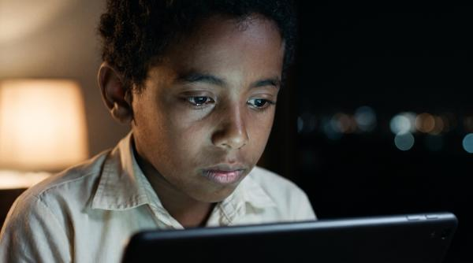
صورة الذاكرة
LOOK A00:18 – 00:30 · 12sالراويخرج يبحث عن السودان الذي عرفه جدّه.


البذرة وسؤال البداية
LOOK A00:30 – 00:40 · 10sالطفلمن أين نبدأ؟
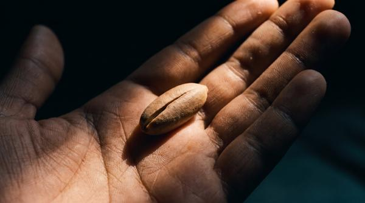
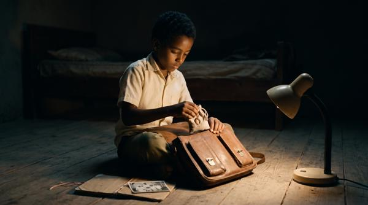
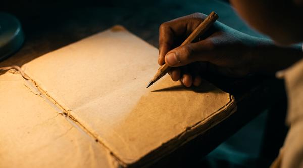
السفر من قطر
LOOK B00:40 – 00:50 · 10sالراويحمل صورة، ودفترًا، وبذرة صغيرة.
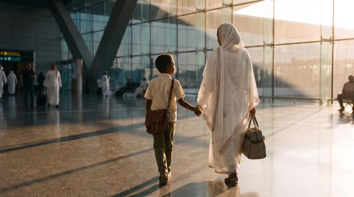

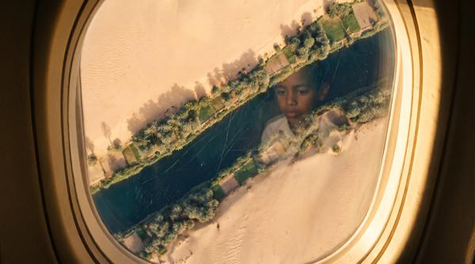
عند باب البيت
LOOK B00:50 – 01:05 · 15sالطفلهل نجد كلّ شيء كما تركناه؟
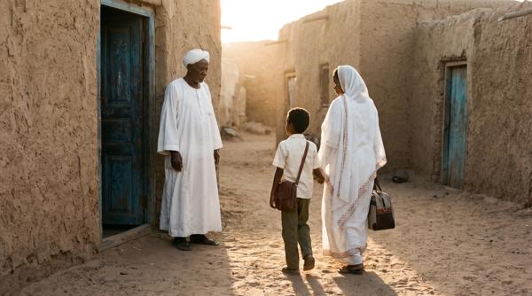


المدرسة الصامتة
LOOK A01:05 – 01:15 · 10sالراويانقطع أطفال عن مدارسهم وأصدقائهم.

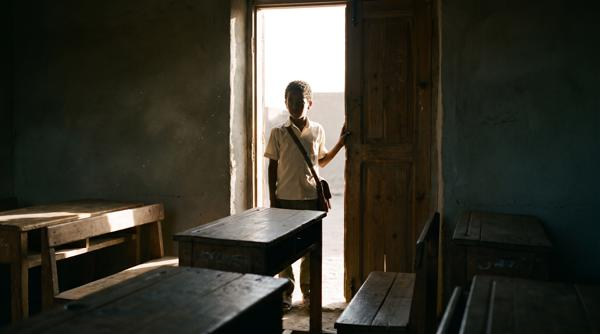

إصلاح باب البيت
LOOK B01:15 – 01:30 · 15sالجدستحتاج أشياء كثيرة إلى أيدينا.
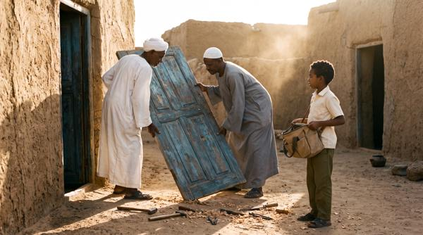
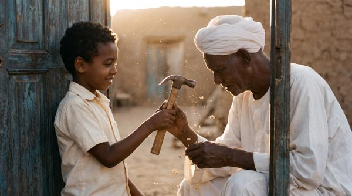
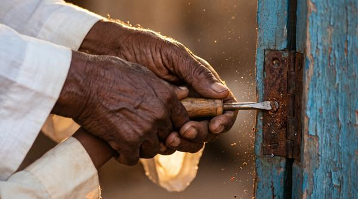
إزاي المشاهد بتتربط ببعض
كل مربع تحت بيعرض نقلة واحدة متكررة: آخر لقطة في المشهد، ونوع النقلة، وأول لقطة في المشهد اللي بعده. ده تمثيل تقريبي للتوقيت والحركة، والتنفيذ الحقيقي بيتعمل بالفيديو والمونتاج.
01 ← 02 MATCH CUT · بالموضع
CUT
- 0.0–1.5sالكاميرا تقرّب على وش الجد في التابلت.
- 1.5sقطع مباشر: نفس الوش في نفس مكان الكادر، بس شاب في صورة قديمة. اتنين وستين سنة بيعدّوا في قطعة واحدة.
02 ← 03 MATCH CUT · بالحركة
CUT
- 0.0–1.2sالإيدين بينزلوا الصورة لتحت.
- 1.2sقطع والحركة لسه مكملة: نفس الكف بيتفتح على نواة البلح.
03 ← 04 WIPE · غلاف الدفتر
- 0.0–1.0sالطفل بيقفل الدفتر، والغلاف الجلد بيعدّي قدام العدسة ويغطي الكادر كله.
- 1.0–1.6sالغلاف يكمّل طريقه، ويبان وراه زجاج المطار. القطع مستخبي جوه حركة الغلاف.
04 ← 05 SCALE MATCH + MORPH
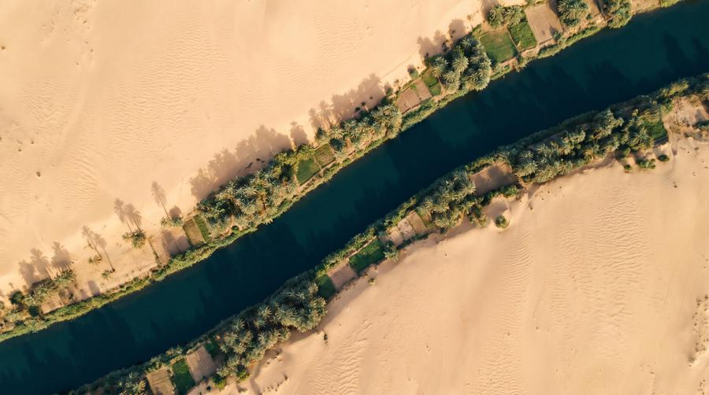
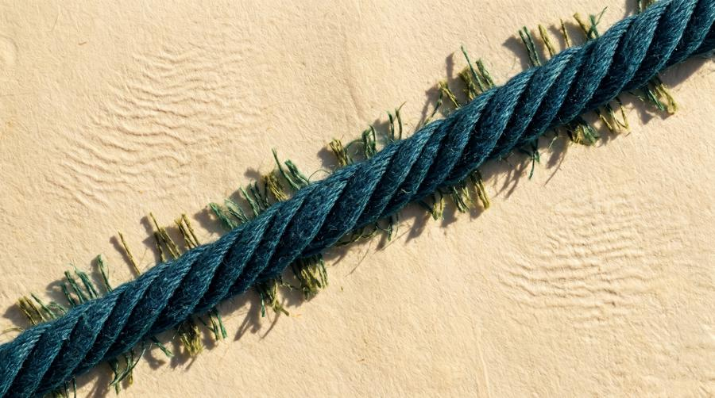
توقيع الفيلم
- 0.0–2.0sمن شباك الطيارة: الكاميرا بتدخل من الشباك.
- 2.0sقطع على درون فوق النيل مباشرة، والكاميرا بتنزل.
- 3.0–5.0sالـ MORPH الوحيد هنا: النيل بيبقى خيط، والنخل بيبقى ألياف، والرملة بتبقى ورق. لقطة واحدة متصلة، والخط ثابت في نفس الزاوية.
- 5.0sقطع على إيد الجد بتربط نفس الخيط على الدفتر.
05 ← 06 WIPE · إطار الباب
WIPE
- 0.0–1.0sالطفل بيعدّي عتبة باب البيت، وخشب إطار الباب بيملى الكادر.
- 1.0–1.6sمن ورا الإطار يبان واقف في عتبة باب المدرسة. من باب لباب.
06 ← 07 J-CUT · الصوت أولًا
J-CUT
- 0.0–2.0sصمت الفصل.
- 2.0sصوت دقات خفيفة بيدخل والصورة لسه على الفصل الفاضي.
- 3.6sقطع: التراب في شعاع الفصل بيبقى صدأ وتراب في شمس الحوش. الصوت هو اللي شدّنا.
فين الـ Morph والـ CGI والجرافيك بالظبط
القاعدة: 90% من الفيلم لقطات حقيقية ومعاها قطع ذكي. التأثيرات بتظهر في لحظات قليلة ومحسوبة، وكل واحدة منهم طالعة من حاجة في إيد الطفل.
| الأداة | بتعمل إيه | فين في الفيلم | التنفيذ |
|---|---|---|---|
| Morph داخل لقطة | حاجة بتتحول لحاجة تانية في نفس اللقطة، من غير قطع | 3 مرات بس: 04←05 النيل يبقى الخيط · 27←28 وشوش الدفتر تبقى الناس الحقيقيين · 29 علم 1956 في شباك الصورة يبقى العلم الحالي | AI بفريم بداية وفريم نهاية متطابقين في التكوين، ونستخدم الجزء النضيف بس |
| Scale Match Cut | قطع من ماكرو لدرون بنفس الشكل، من غير أي تأثير | 04←05 الخيط والنيل · 08 رغوة الجبنة وموج سواكن · 09 رصاص الرسمة وجرانيت التاكا · 13 بصمة الصباع وحقول الجزيرة · 19 خرزة الطين وهرم مروي | لقطتين حقيقيتين متطابقتين في الزاوية والضوء، والمونتاج هو اللي بيعمل السحر |
| شباك 1956 (CGI كومبوزيت) | جوه إطار صورة الجد الماضي بيتحرك بالأبيض والأسود، وبرا الإطار الحاضر بالألوان | 02 لمحة أولى صغيرة · 12 مروي · 29 الذروة، رفع العلم | الصورة prop حقيقي في الإيد، متعقبة (planar track)، وجواها لقطة أرشيف تخيلية بجرين 16mm |
| الخيط | prop حقيقي، ومن غير أي CGI | 05 الجد بيربطه · كل محطة بيتضاف له لون أو خرزة · 28 بيتربط بيه الشتلة | بيتولّد في كل لقطة بكارت ثابت. بدون توهج ولا خطوط نيون |
| جرافيك: خط الطفل | اسم كل مكان مكتوب بخط إيد الطفل جوه المشهد نفسه | مع كل محطة: سواكن، كسلا، جبل مرة… | After Effects بـ 3D tracking، والخط بيتأثر بالضوء والريح |
| جرافيك: الختام | شارة الذكرى 71 وشعار الحملة | 29 | من ملفات الهوية الأصلية، مش بالـ AI |